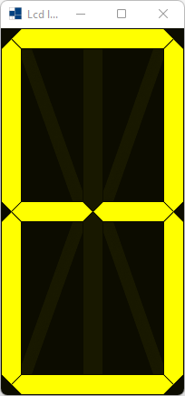
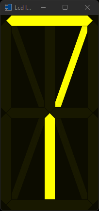
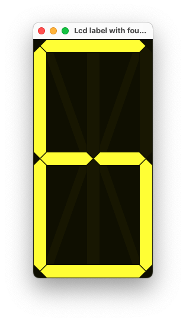
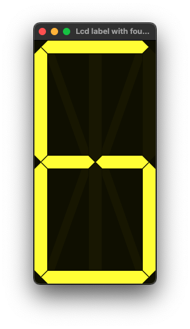
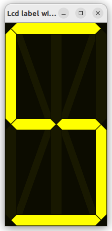
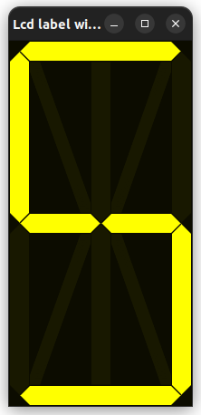

|
xtd
0.2.0
|
lcd_label_with_fourteen_segment.cpp
demonstrates how to use xtd::forms::lcd_label_with_fourteen_segment control.
- Windows
- 

- macOS
- 

- Gnome
- 

#include <xtd/forms/application>
#include <xtd/forms/form>
#include <xtd/forms/lcd_label>
#include <xtd/forms/timer>
using namespace xtd;
using namespace xtd::drawing;
using namespace xtd::forms;
auto main()->int {
auto index = 0_sz;
form form_main;
form_main.text("Lcd label with fourteen segment example");
form_main.client_size({202, 403});
lcd_label label;
label.parent(form_main);
label.dock(dock_style::fill);
timer timer;
timer.interval(300_ms);
timer.enabled(!timer.enabled());
timer.tick += [&] {
if (++index >= label.valid_characters().size()) index = 0;
};
application::run(form_main);
}
static color average(const color &color1, const color &color2, double weight, bool average_alpha) noexcept
Returns the weighted average color between the two given colors.
static const xtd::drawing::color yellow
Gets a system-defined color that has an ARGB value of 0xFFFFFF00. This field is constant.
Definition: color.h:475
static const xtd::drawing::color black
Gets a system-defined color that has an ARGB value of 0xFF000000. This field is constant.
Definition: color.h:79
static ustring format(const ustring &fmt, args_t &&... args)
Writes the text representation of the specified arguments list, to string using the specified format ...
Definition: ustring.h:744
xtd::forms::style_sheets::control label
The label data allows you to specify the box of a label control.
Definition: label.h:23
xtd::forms::style_sheets::control form
The form data allows you to specify the box of a form control.
Definition: form.h:21
@ fourteen_segment_display
Fourteen segment display style.
The xtd::drawing namespace provides access to GDI+ basic graphics functionality. More advanced functi...
Definition: actions_system_images.h:11
The xtd::forms namespace contains classes for creating Windows-based applications that take full adva...
Definition: about_box.h:13
The xtd namespace contains all fundamental classes to access Hardware, Os, System,...
Definition: system_report.h:17
Generated on Sun Oct 1 2023 07:46:01 for xtd by Gammasoft. All rights reserved.